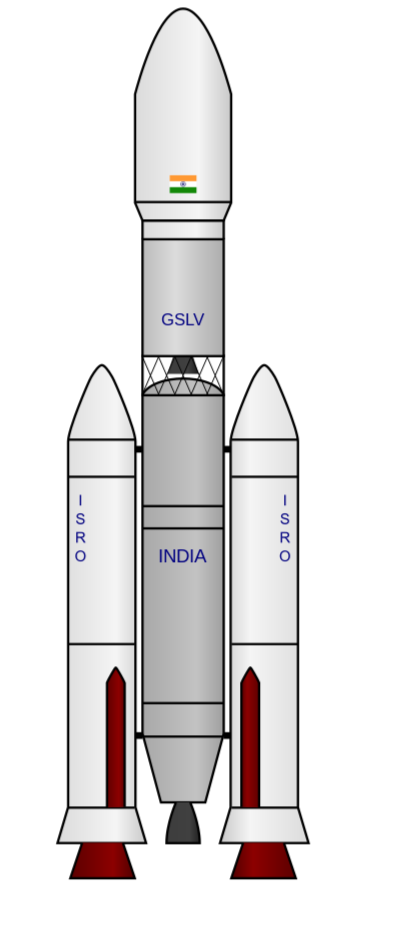

CHANDRAYAN 3
 CLICK HERE to register for watching the launch in person
CLICK HERE to register for watching the launch in person
Once again a giant leap for Mankind
Chandrayaan-3 is a follow-on mission to Chandrayaan-2 to demonstrate end-to-end capability in safe landing and roving on the lunar surface. It consists of Lander and Rover configuration. It will be launched by LVM3 from SDSC SHAR, Sriharikota. The propulsion module will carry the lander and rover configuration till 100 km lunar orbit. The propulsion module has Spectro-polarimetry of Habitable Planet Earth (SHAPE) payload to study the spectral and Polari metric measurements of Earth from the lunar orbit.
Lander payloads: Chandra’s Surface Thermophysical Experiment (ChaSTE) to measure the thermal conductivity and temperature; Instrument for Lunar Seismic Activity (ILSA) for measuring the seismicity around the landing site; Langmuir Probe (LP) to estimate the plasma density and its variations. A passive Laser Retroreflector Array from NASA is accommodated for lunar laser ranging studies.
Rover payloads: Alpha Particle X-ray Spectrometer (APXS) and Laser Induced Breakdown Spectroscope (LIBS) for deriving the elemental composition in the vicinity of landing site.
The mission objectives of Chandrayaan-3 are:
- To demonstrate Safe and Soft Landing on Lunar Surface
- To demonstrate Rover roving on the moon
- To conduct in-situ scientific experiments.
ROCKET USED :
LVM 3

TO KNOW MORE ABOUT VEHICLE Click here or click on the image above